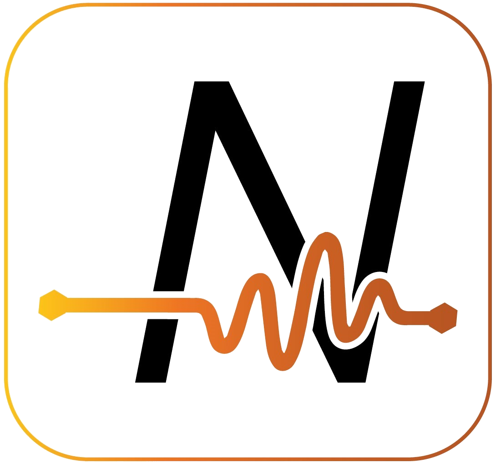

Integrations
Overview
XMPro has several different integrations:
- Agents are the building blocks of Data Stream Designer
(default Agents bulk download here). - Connectors integrate to third-party data sources in App Designer
(default Connectors bulk download here) - Visualization Blocks are the building blocks of App Designer to create rich user experiences
Agents
An Agent is a reusable object that forms the building block of a Data Stream. When several Agents are connected, a Data Stream is formed.
Each Agent is designed to perform a specific function in the stream. For example, they can be used to retrieve data from a database in real-time, display data, filter, sort the data, or save the data somewhere else, depending on the function of that individual Agent.
Looking for an Agent that is not on the list? Send us a request or check out the Framework to create a new Agent yourself.
Generative AI & Large Language Models
| Agent | Category | Tier |
|---|---|---|
 Azure AI Document Intelligence Azure AI Document Intelligence |
Generative AI | 5 |
| Generative AI | 4 | |
| Generative AI | 5 | |
 Ollama Ollama |
Generative AI | 5 |
AI & Machine Learning
| Agent | Category | Tier |
|---|---|---|
| Anomaly Detection | AI & Machine Learning* | 5 |
 Azure ML Azure ML |
AI & Machine Learning | 5 |
 Binary Classification Binary Classification |
AI & Machine Learning* | 5 |
| Boon Amber | AI & Machine Learning | 4 |
| Forecasting | AI & Machine Learning* | 5 |
 Kmeans Clustering Kmeans Clustering |
AI & Machine Learning* | 5 |
 MLflow MLflow |
AI & Machine Learning | 5 |
| Multi Class Classification | AI & Machine Learning* | 5 |
 Python Python |
AI & Machine Learning | 5 |
| Regression | AI & Machine Learning* | 5 |
 RScript RScript |
AI & Machine Learning | 5 |
Social & Communication
| Agent | Category | Tier |
|---|---|---|
| Listener, Action Agent | 1 | |
| Twilio | Action Agent | 1 |
Database & Technology
| Agent | Category | Tier |
|---|---|---|
.png) Azure Data Explorer Azure Data Explorer |
Listener, Context Provider, Action Agent | 2 |
 Azure Data Factory Azure Data Factory |
Action Agent | 2 |
 Azure Data Lake Azure Data Lake |
Action Agent | 2 |
| Azure Digital Twin | Listener, Context Provider, Action Agent | 2 |
 Azure Event Hub Azure Event Hub |
Listener, Action Agent | 2 |
| Azure IoT Hub | Listener | 2 |
| Cognite | Listener, Context Provider | 2 |
 Ethereum Smart Contract Ethereum Smart Contract |
Listener, Action Agent | 2 |
 Excel File Reader Excel File Reader |
Action Agent | 2 |
| ifm | Listener | 2 |
 InfluxDB InfluxDB |
Listener, Context Provider, Action Agent | 2 |
| Litmus Edge OPC UA | Listener, Action Agent | 2 |
| Listener, Context Provider, Action Agent | 2 | |
| MOVUS | Listener, Context Provider, Action Agent | 2 |
 MySQL MySQL |
Listener, Context Provider, Action Agent | 2 |
 Neo4j Neo4j |
Listener, Context Provider, Action Agent | 2 |
| OData | Context Provider, Action Agent | 2 |
 ODBC ODBC |
Listener, Context Provider | 2 |
.png) OPC DA OPC DA |
Listener, Action Agent | 2 |
| OPC UA | Listener, Action Agent | 2 |
| Oracle | Action Agent | 2 |
 Snowflake Snowflake |
Listener, Context Provider, Action Agent | 2 |
ERP
| Agent | Category | Tier |
|---|---|---|
 Coupa Coupa |
Context Provider, Action Agent | 3 |
| Erbessed | Listener, Context Provider | 3 |
| iPOS | Action Agent | 3 |
 FinOps FinOps |
Context Provider, Action Agent | 3 |
| OSIsoft PI | Listener, Context Provider, Action Agent | 3 |
| Salesforce | Listener, Context Provider, Action Agent | 3 |
| SAP | Context Provider, Action Agent | 3 |
.png) SAP HANA SAP HANA |
Context Provider, Action Agent | 3 |
Advanced App
| Agent | Category | Tier |
|---|---|---|
| FFT | Function | 4 |
|  Nanoprecise | Listener, Context Provider, Action Agent | 3 |
 Signal Filter Signal Filter |
Function | 4 |
 Sparkplug B Sparkplug B |
Listener, Action Agent | 4 |
| Tango | Listener, Context Provider | 3 |
| Telit deviceWise | Listener, Context Provider, Action Agent | 3 |
.png) Telit MQTT Telit MQTT |
Listener, Action Agent | 3 |
%20(1).png) Telit OPC UA Telit OPC UA |
Listener, Action Agent | 3 |
 WebScraper WebScraper |
Context Provider | 4 |
Open Source
| Agent | Category | Tier |
|---|---|---|
 Azure SQL Azure SQL |
Listener, Context Provider, Action Agent | 5 |
| Convert Flow Units | Function | 5 |
| CRC16 | Function | 5 |
| CSV | Listener, Context Provider, Action Agent | 5 |
 Fixed Width File Reader Fixed Width File Reader |
Action Agent | 5 |
 Goal Seek Goal Seek |
Function | 5 |
| HiveMQ | Listener, Action Agent | 5 |
 JSON JSON |
Context Provider, Transformation | 5 |
 Linear Interpolation Linear Interpolation |
Function | 5 |
 Min Max Min Max |
Function | 5 |
| MQTT | Listener, Action Agent | 5 |
 PDF Converter PDF Converter |
Action Agent | 5 |
| REST API | Context Provider, Action Agent | 5 |
| Rounding | Function | 5 |
 SQL Server SQL Server |
Listener, Context Provider, Action Agent | 5 |
 XML File Reader XML File Reader |
Action Agent | 5 |
XMPro Internal
| Agent | Category | Tier |
|---|---|---|
| Aggregate | Transformation | 6 |
| Alter Attributes | Transformation | 6 |
| Area Under the Curve | Function | 6 |
 Batch Identifier Batch Identifier |
Transformation | 6 |
| Broadcast | Transformation | 6 |
 Calculated Field Calculated Field |
Transformation | 6 |
| Concatenate Row Values | Transformation | 6 |
 Data Conversion Data Conversion |
Transformation | 6 |
 Edge Analysis Edge Analysis |
Transformation | 6 |
 Event Printer Event Printer |
Action Agent | 6 |
 Event Simulator Event Simulator |
Listener | 6 |
 File Listener File Listener |
Listener | 6 |
| Filter | Transformation | 6 |
| Geofence | Function | 6 |
 Group & Merge Group & Merge |
Transformation | 6 |
| Join | Transformation | 6 |
 Meta Meta |
Action Agent | 6 |
 Missing Value Detector Missing Value Detector |
Transformation | 6 |
 Missing Value Substitutor Missing Value Substitutor |
Transformation | 6 |
| Normalize Fields | Transformation | 6 |
 Pass Through Pass Through |
Transformation | 6 |
| Pivot Table | Transformation | 6 |
| Random Number | Transformation | 6 |
 Row Count Row Count |
Transformation | 6 |
 Row Padding Row Padding |
Transformation | 6 |
| Sort | Transformation | 6 |
 Threshold Monitor Threshold Monitor |
Transformation | 6 |
| Transpose | Transformation | 6 |
| Trim | Transformation | 6 |
| Union | Transformation | 6 |
| Unzip | Action Agent | 6 |
| Window | Transformation | 6 |
 XMPro App XMPro App |
Action Agent | 6 |
Recommendations
| Agent | Category | Tier |
|---|---|---|
| Close Action Request | Recommendation | 6 |
| Read Action Request | Recommendation | 6 |
 Read Recommendation Read Recommendation |
Recommendation | 6 |
 Resolve Recommendation Resolve Recommendation |
Recommendation | 6 |
 Run Recommendation Run Recommendation |
Recommendation | 6 |
 Update Recommendation Update Recommendation |
Recommendation | 6 |
Download Default Agents
Tier 5
Download the tier 5 files here.
Use these individual files if you are not on v4.1.13 or higher:
| Action Agents AI & ML |
Context Providers Functions |
Listeners |
|---|
*Note: Links for the larger AI & ML Agents are on their individual documentation pages.
Tier 6
Download the tier 6 files here.
Use these individual files if you are not on v4.1.13 or higher:
| Action Agents Functions |
Listeners Recommendations |
Transformations |
|---|
Connectors
A Connector is a pre-built integration plug-in for the XMPro App Designer that allows you to connect to third-party data sources without coding.
Whereas the Agents in a published Data Stream continuously poll for data, the Connectors in a published App retrieve data on an ad-hoc basis.
Note
Download the tier 5 & 6 Connector files here.
Database & Technology
| Connector | Tier |
|---|---|
| Azure Data Explorer |
2 |
 TSA Azure Data Explorer TSA Azure Data Explorer |
2 |
| Azure Digital Twin | 2 |
| Neo4J |
2 |
| Snowflake |
2 |
ERP
| Connector | Tier |
|---|---|
 Erbessd Erbessd |
3 |
| OSIsoft PI | 3 |
| OSIsoftPI Histogram | 3 |
Advanced App
| Connector | Tier |
|---|---|
| Nanoprecise | 3 |
Open Source
| Connector | Tier |
|---|---|
| Azure SQL |
5 |
 HTTP HTTP |
5 |
| JSON | 5 |
| REST API | 5 |
| SQL Server |
5 |
| TSA SQL Server |
5 |
XMPro Internal
| Connector | Tier |
|---|---|
 Data Streams Data Streams |
6 |
Visualization Blocks
An App Designer visualization block allows a no-code way to integrate with third-party systems and create rich user experiences. Listed below are some of the integration blocks found in the App Designer toolbox:
| Visualization Block |
|---|
.png) Autodesk Forge Autodesk Forge |
| D3 Visualization |
| Esri Map |
| Pivot Grid |
| Power BI |
| Time Series Chart |
| Unity |